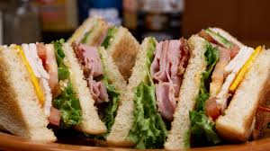

A Recipe For An Outstanding Club Sandwich

Welcome to a page for making your very own club sandwich.
Why should you make such sandwiches? Simple fact. The're simple and easy to make.
So... without further a do, let's start! (Note: Just follow along!)
Ingredients for a Club Sandwich
To start our online cooking session, the correct ingredients for mkaing a club sandwich are as follows:
- THE MEATS!!
- THE REST OF THE ENSEMBLE!!
- Cheese
- Lettuce
- Tomato
- Mayo
- THE FINAL PIECE!!
- Bread (Note: You may use any bread you desire)
The Method
Now that you've gathered all the ingredients, it's time to band all these solo pieces and make a
a grand orchestra!
- First Layer
- Spread the mayo on one side of lightly toasted bread.
Add turkey, tomato and cheese (be sure to put the tomatoes in the middle so the bread doesn't get soggy)
- Second Layer
- Layer ham, bacon and lettuce
- Final Step
- Top the made structure with the final slices of bread, then secure it with cute sandwich picks and cut them into quarters.
Conclusion
Voila! You jus tmade yourself a quick yet delicious Club Sandwich
If you'd like some more recipes, feel free to visit Fun Recipes.